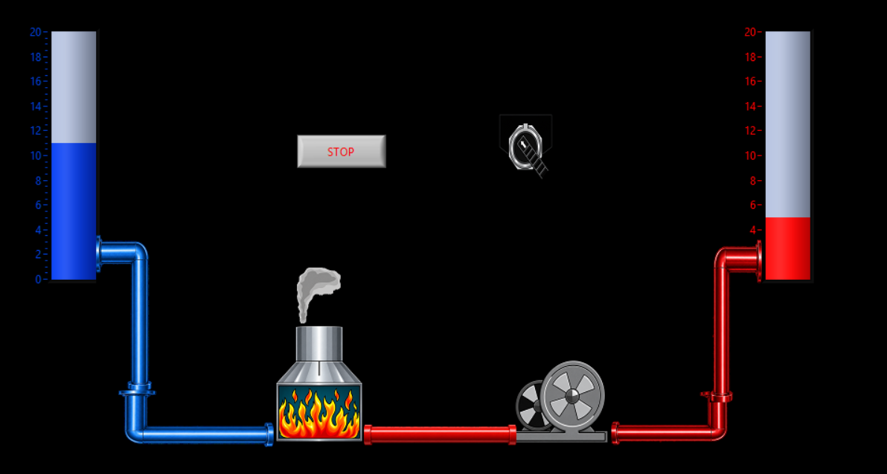

PLC Programming
Allen-Bradley focused work using RSLogix 500, Connected Components Workbench, Micro800/Micro820 platforms, and additional Studio 5000 practice.
PLC • Controls • Industrial Automation
I am a Mechanical Engineering graduate focused on PLC programming, automation, machine integration, and controls. My work combines Allen-Bradley PLCs, ladder logic, HMI / SCADA concepts, mechanical design, and hands-on system development.
About
My strongest work sits at the intersection of software, hardware, and physical systems. I enjoy taking a process requirement and turning it into clear logic, well-defined machine states, and reliable operator-visible behavior.
Allen-Bradley focused work using RSLogix 500, Connected Components Workbench, Micro800/Micro820 platforms, and additional Studio 5000 practice.
Experience connecting logic to sensors, conveyors, valves, robotic mechanisms, process sequencing, pass/fail logic, and fault handling.
Mechanical design, simulation, fabrication, and robotics experience help me understand the real equipment behind an automation system.
Skills
A recruiter-friendly view of the tools and concepts demonstrated across my projects.
Projects
The projects below best represent my PLC, automation, process-control, and integration experience.

Developed a PLC-controlled manufacturing system that automated inspection, assembly, and quality assurance of 3D-printed parts moving through a conveyor-based process.
Ladder logic coordinated part detection, inspection, assembly actions, conveyor movement, and quality-control decisions.
Improved quality-control accuracy by 20% and supported presentation of the work at SCCUR.


Built a LabVIEW monitoring and control interface for a two-tank thermal-water process where a cold-water tank feeds a boiler, a circulation pump transfers heated water, and the process fills a hot-water tank.
The front panel shows the process visually, including tank levels, equipment state, boiler behavior, and process status for monitoring.
The block diagram demonstrates the actual logic using loop-based monitoring, Boolean controls, threshold logic, and state-based behavior.


Developed a repeating traffic-light control sequence with timed state changes, internal control bits, logic interlocks, and HMI status visualization.
Timer-based sequencing updates red, yellow, and green outputs while coordinating two directions of traffic safely.
Animated indicators let the operator observe the intersection state in real time.
Programmed a PLC using ladder logic to automate tank filling and dispensing from real-time level feedback. Ultrasonic sensing drove automatic valve control while the sequence maintained defined operating states.
Additional Projects
Developed MATLAB / Simulink control for a MinSeg robot, deriving and linearizing the electromechanical model into state-space form and integrating accelerometer / gyroscope feedback with Arduino.
Engineered an automated marble track with lifting, sorting, and shooting mechanisms. Programmed Arduino control for sensors and servos and produced the electrical schematics.
Built an Arduino-controlled vehicle using ultrasonic sensing for obstacle avoidance and temperature sensing for flame detection while integrating water-delivery subsystems.
Built focused ladder-logic exercises covering machine start/stop circuits, timers, counters, latches, interlocks, fault reset, and troubleshooting fundamentals.
Engineering Experience
Automated systems are not only software. My mechanical background helps me understand components, packaging, fabrication constraints, and physical behavior behind the controls.
Designed suspension components in SolidWorks for the CSUF Formula SAE race car, performed stress-analysis calculations to validate strength while reducing weight, and supported fabrication and shop work to ensure components met design specifications.
Contact
If you are hiring for an entry-level PLC, controls, automation, robotics, or manufacturing-automation role, I would be glad to connect.